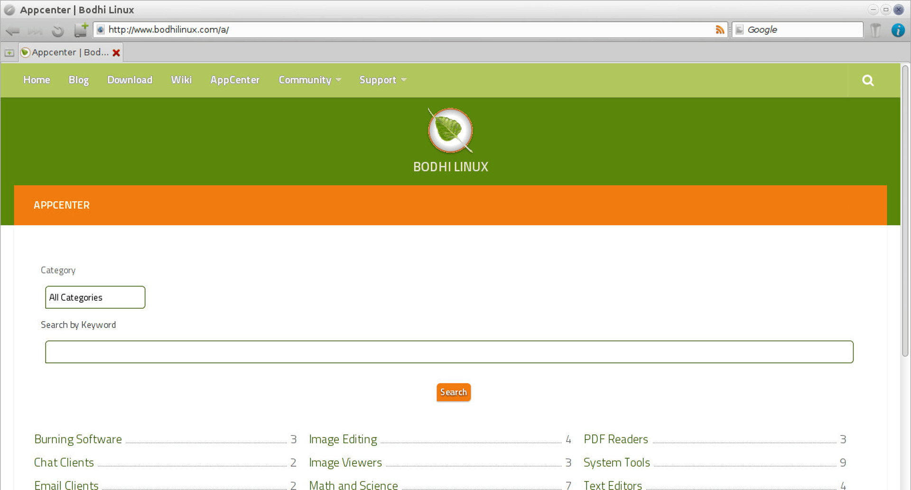

In most cases, you will want to have an Internet connection
established to install software in Bodhi Linux.
Please follow this link if you need assistance
Connecting to the
Internet.
Updating System via Terminology
The first thing to do after establishing an internet connection is to update your system.
There are multiple methods to achieve this, but
the simplest method is by using the terminal. Run the following command in Terminology :
sudo apt update && sudo apt dist-upgradeIf you installed the new hwe version of Bodhi, kernel updates will be enabled by default.
But tradtionally, Bodhi has taken the view of "not forcing kernel updates." So users of non-hwe versions of Bodhi, who want to update the kernel, simply install this meta package to ensure you'll always be offered the latest kernel in the updates:
sudo apt install linux-genericBodhi Linux AppCenter
{kind=link}
The Bodhi Linux team has created the AppCenter as a very fast and simple way to install many common applications. While you won't find every application that you can install in Bodhi Linux at the AppCenter, you will find what we consider to be "best of breed" applications for each particular category.
Here's a quick tutorial on how to install applications at the AppCenter:
-
Find your application.
If you already know the name of the application you wish to install, just type it in the search bar.
If not, simply browse through the categories listed on the front page. -
Navigate to the page.
Whichever method you choose to find your application, you will be presented with a link that leads to a page with a description of the application..
Each application has its own page with a description of the application and a screenshot of it. -
Install it!
Simply click the "Install Now" button and enter your password when you are prompted for it. That's it! Your application and all of its dependencies will be automatically installed.
Synaptic Package Manager
The
Synaptic Package Manager, common to all
Debian
based distributions, is installed in
Bodhi 5.1
by default. If you installed an older version of Bodhi, install it by clicking the icon below or use sudo apt install synaptic from the command line.
With Synaptic Package Manager, you have access to all of the applications in the Bodhi and Ubuntu repositories.
Please see our Wiki for complete instructions on using Synaptic Package Manager.
Snap, Flatpak and AppImage
In an effort to move away from platform specific packaging methods to platform agnostic ones, several new tools for packaging, distributing, installing software have been developed. Most noteworthy are Snap, Flatpak and AppImage. These are not supported by default in Bodhi.
Please see our Wiki for complete instructions on using these tools.
apt-get & dpkg (advanced)
The command-line tools apt, apt-get and dpkg
are the "backend" to the above methods of installing
applications. Advanced users are free to use these tools from the command line, but this is beyond is beyond the scope of this document.
Advanced users may also insall from source code.